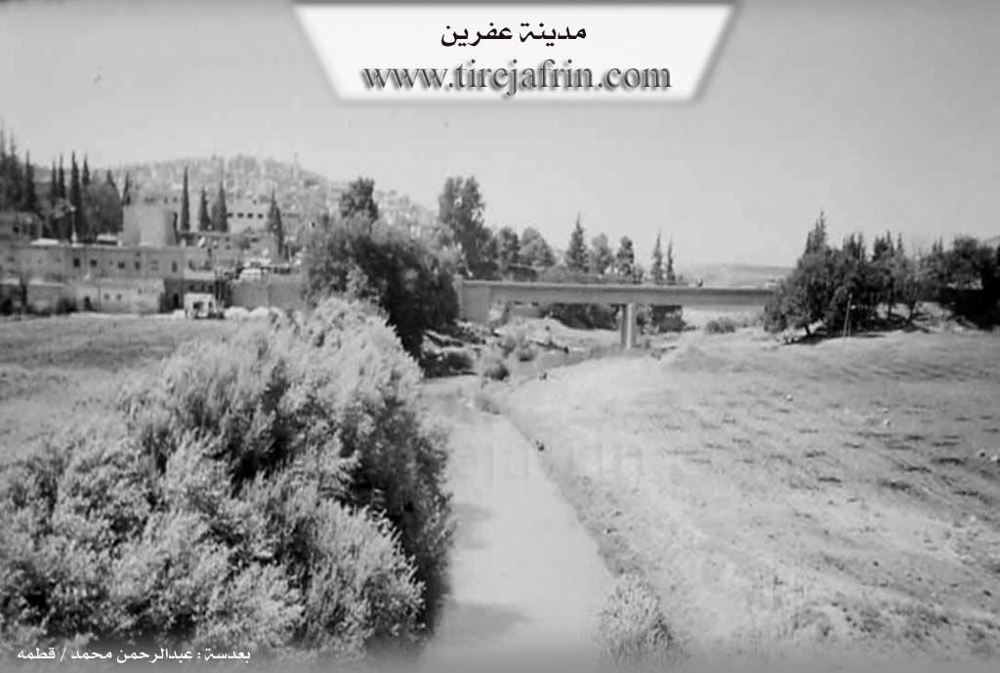
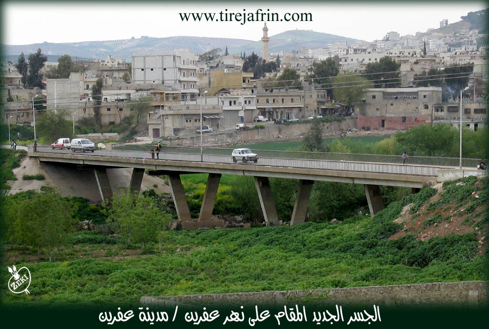
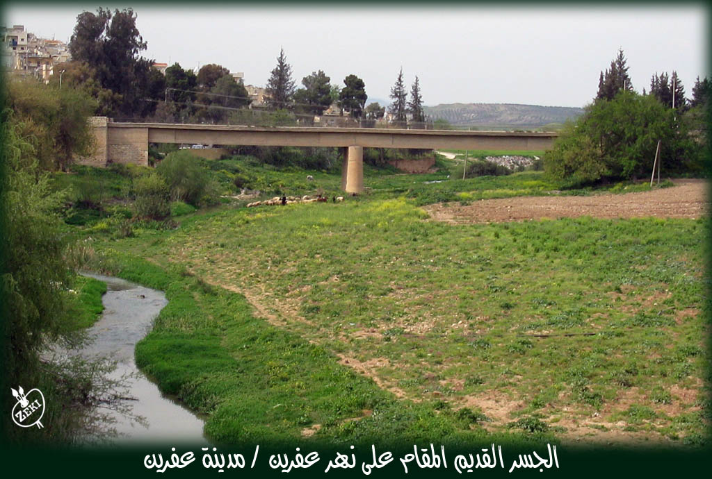
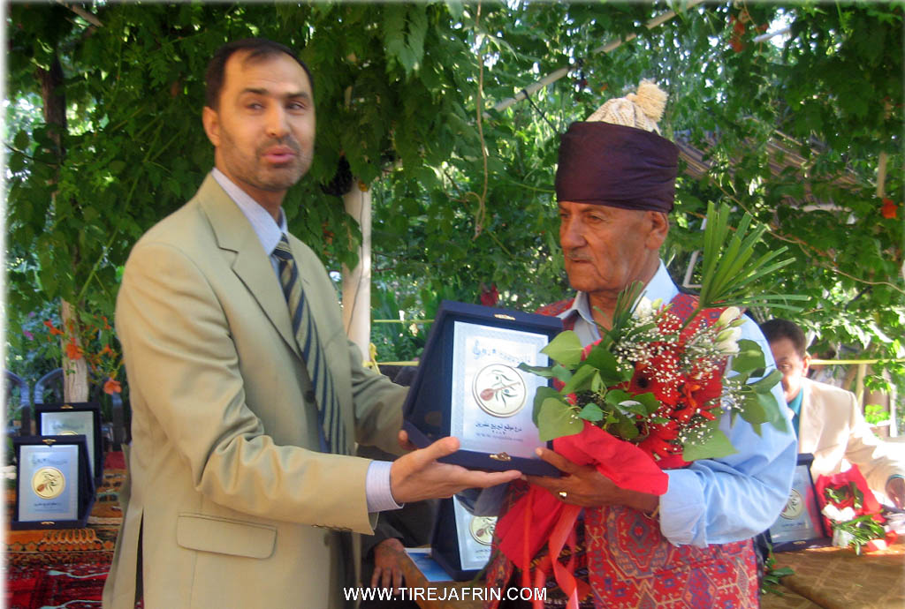
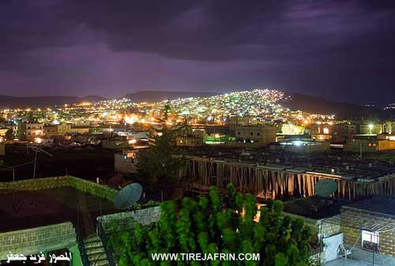
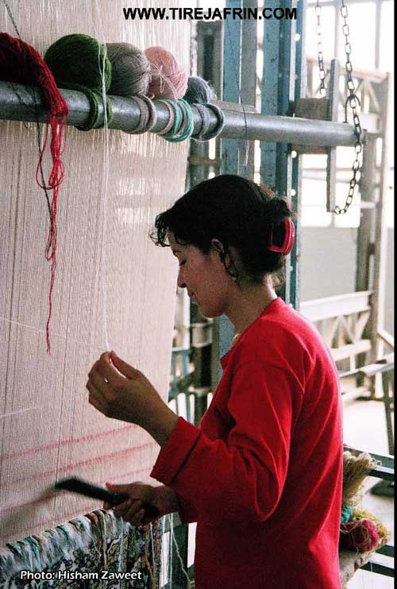
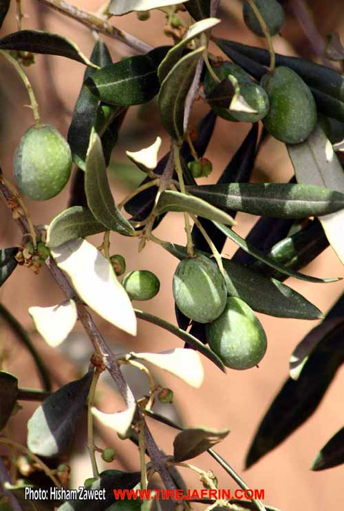
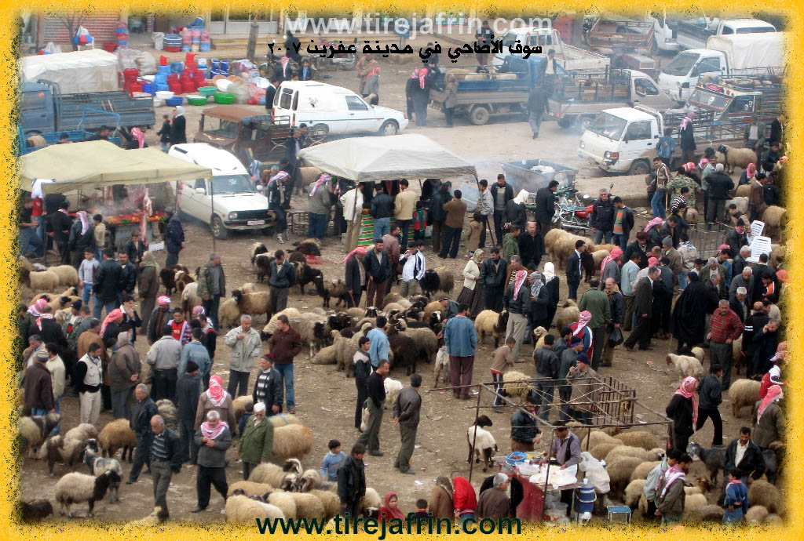
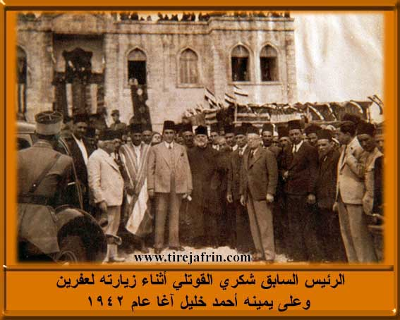

General Information
Nahiya (Subdistrict)
Efrîn
Also Known As
Afirîn, Afrin, Afrîn, Efrîn, Çiyayê Kurmênc, Çiyê Kurmênc, آفرين, عفرين
Tribes
Bobena, Mamil Uşaxî
Families, Clans, etc.
Al Derwîş Axa Şemo, Al Ehmed Xelîl, Al Genco Fîyo, Al Horîk, Al Mehmûd Qedîb El-Ban, Al Sîdo Mîmî, Al Wehîd Aşvan, Al Xebarî, Al Şêx Ismayîl

Photos










Basic Information about Efrîn
Source: Tirej Afrin
Etymology: Multiple origins proposed: 1) From Aramaic 'Afro' meaning fertile land; 2) From Assyrian 'Aprie' or 'Apre'; 3) From Kurdish 'Av' (water) + 'rîn' (reddish/earthy color) meaning 'reddish water' due to the river's color during floods; 4) From Kurdish 'Afirîn' meaning creation or giving.
Foundation Date/Period: Early 20th century (modern city established approx 1925)
Caves: Caves near the old electricity building
Springs: Kaniya Kefer Cenê
Hills: Çiyayê Ziyadiyê, Tel Tewîl, Girê Emplik, Girê Xemrevîn, Çiyayê Lekam, Çiyayê Seman, Çiyayê Lêlûn
Shrines: Mecelê Şêx Zêd, Mizgefta Selaheddîn
Ruins: Pira Erşqîbar, Pira Qîbar, Pira Romayî
Wells: Artesian wells
Other Landmarks: Çemê Efrînê, Çemê Sabûn, Bendava 17 Nîsanê, Şelalên Meydankê, Şelalên Kemrûk
Summaries
I. Summary from TirejAfrin Site (English) of Efrîn
Source: https://www.tirejafrin.com/site/kura%20afrin%20markaz-afrin.htm
It is stated in the book (under printing): Efrîn... Her River and Her Green Hills by the writer Ebdulrehman Mihemed from the village of Qetme: Efrîn is located in the northwestern corner of Syria. Efrîn took its name from the word "Afro," which means "fertile land" in Aramaic. It is situated at the southern slope of Çiyayê Ziyadiyê at an altitude of 392 meters, on the high right bank of the Efrîn river, which keeps it safe from the river's flooding. Its soil is fertile clay. It is 60 km away from the city of Aleppo towards the northwest. It is bordered to the north by the heights and shrine of Çiyayê Ziyadiyê and the village of Tel Tewîl; to the south by the plain and river of Efrîn and the village of Kersantaş; to the east by the Efrîn river valley, the Riya Heleb-Efrîn (Aleppo-Efrîn road), and the village of Erşqîbar; and to the west by an agriculturally fertile plain and the villages of Keferşîl and Maratê.
The history of Efrîn dates back to the beginning of the twentieth century. In 1925, the site of the Erşqîbar bridge was chosen to build a government house. This was the beginning of the origin of the city of Efrîn, becoming an administrative center for the region's management. It organizationally attracted the surrounding areas, and the administrative center was moved from the village of Mabeta and Maratê to the city of Efrîn to become the final administrative center for the region. Efrîn was a resting place for trade caravans between Aleppo and the Lîwa Iskenderûn. The city expanded after independence and incorporated some neighboring villages. Its old dwellings were made of stone and mud with flat wooden roofs.
The city expanded during the Correctionist era, and organizational plans were prepared to cover 830 hectares. Modern multi-story concrete buildings began to spread around the nucleus of the old city and on both sides of its modern streets. New neighborhoods emerged, such as the Eşrefiye neighborhood east of the city and the Mehmûdiye neighborhood northwest of the city. The city of Efrîn is considered one of the most beautiful small cities in the Syrian Arab Republic in terms of street organization since the French era. The inhabitants of this city work in agriculture, the most important of which are olives, grains, legumes, and grapes. Irrigated crops are watered from the Efrîn river waters and artesian wells. Residents also plant summer vegetables, cotton, and sugar beets near the Efrîn river, irrigated from it. Most inhabitants rely, alongside their agricultural resources, on income brought by professional work, services, and trade exchanges, while a portion of them work in state institutions.
It has an electricity network and drinking water derived from the Kaniya Kefer Cenê (Kefer Cenê spring), about 7 km northeast of Efrîn, and from artesian wells. It contains several primary, preparatory, and secondary schools, as well as an industrial secondary school and a Sharia preparatory school. The population is approximately 47,108 people, and the total population of the central sub-district was 136,873 people as of January 1, 2006. It has a cultural center, a rural development center, a health and veterinary center, a post, telegraph, and telephone center, a child care center, and an extension unit for rug and carpet making, in addition to official government departments. There are several mosques, the oldest of which is the Selaheddîn mosque near the government house. It contains 11 pomace oil extraction factories, five olive oil presses, four small soap manufacturing factories, and a tin can factory. The Efrîn market (Bazaar) was established during the era of Cemîl Ehmed Bafî Axa, the mayor of Efrîn, in 1935 AD, where a bazaar is held every Wednesday in the city center. A city council was established in the city of Efrîn in 1983 AD, consisting of ten members. Efrîn is connected to the city of Aleppo by two paved roads: the first is the Riya Efrîn-Dêr El-Cemal-Heleb (Efrîn-Dêr El-Cemal-Heleb road), and the second is the Riya Efrîn-Daret Ize-Heleb (Efrîn-Daret Ize-Heleb road).
The earliest inhabitants were Armenians who fled the tyranny of the Turks; they built their homes around the government buildings and worked in the blacksmithing profession and other works that the French forces needed, especially in equipping horses. They were followed in building residential houses by some Aghas of the region, such as the Al Sîdo Mîmî, the Al Xebarî, the leader of the Êzîdî at the time Derwîş Axa Şemo, then Ehmed Xelîl from Mamil Uşaxî, and others.
The Efrîn region is an administrative area in Çiyayê Kurmênc following the Aleppo governorate. It extends east to Çiyayê Seman, bordered to the north by Turkey, to the east by the city of Azaz, to the south by the Çiyayê Seman area and Idlib governorate, and to the west by the Lîwa Iskenderûn. It consists of the city of Efrîn and seven sub-districts: (villages of the Efrîn center, Bilbil, Cindirês, Reco, Şeran, Şêx El-Hedîd, Mabeta). The total number of its villages is 263 villages and 100 farms.
The Efrîn River
The Efrîn river is located in northwestern Syria, in the Efrîn region, Aleppo governorate. It originates from Çiyayê Lekam and the Antep plateau. It passes through the Rondan. The length of its course in Syrian lands is 85 km out of its original length of 149 km from its source to its end in the Amik depression in the Lîwa Iskenderûn. It penetrates Syrian lands northeast of the village of Şeltah at an elevation of 360 m and passes near the village of Dêr Sewan after Şeltah, piercing through Roman bridges erected on this river. It meets the Çemê Sabûn (Sabûn river) west of the village of Wêra Kan and heads deeply towards Meydankê, where rocks of varying hardness form the Meydankê and Kemrûk waterfalls in its course. It penetrates the lands with many bends until the city of Efrîn. It is fed by several seasonal streams and small springs, forming many bends descending to it from the heights of Çiyayê Seman and Lêlûn to the east and Çiyayê Kurmênc to the west. Its average flow is 8.6 m³/s. In spring, the flow reaches up to 15.6 m³/s, sometimes causing destructive floods as happened in 1974 AD when the main bridge at the entrance of Efrîn city collapsed completely, and a replacement bridge was built. The river water decreases and becomes scarce in summer, with flow reaching 1.41 m³/s.
Given the regulation of river water and utilization of its waters, the state took interest in constructing a dam on the river course named the Bendava 17 Nîsanê (17th of April Dam). The foundation stone was laid in 1980 by Dr. Abd Al-Raouf Kasm, the former Prime Minister, to build a large dam on the river course north of Efrîn city at the Meydankê site. The length of the dam lake towards the east is about 12 km. This dam is located north of Efrîn city at the village of Meydankê and was inaugurated in 2004 AD by Prime Minister Engineer Muhammad Naji Otri. The river water will be utilized for irrigation and reclamation of a vast number of hectares in the Efrîn and Cindirês plain up to the Turkish border. Several bridges are also established on it west of Meydankê near the Kemrûk waterfalls. There are two bridges in the city of Efrîn: the first at the site of the old collapsed bridge, and the second 500 meters to the south. There is also a third bridge at the village of Kefêr and Burc Ebdalo, and a fourth bridge in the village of Tel Selûr. The Efrîn river, especially after the establishment of the Bendava 17 Nîsanê, is considered the vital and important artery for the region. It constitutes a touristic outlet for the city of Aleppo, and river water is currently being drawn to supply the cities of Efrîn and Azaz.
Efrîn Municipality
In 1926 AD, the region's administration center moved from the village of Mabeta. Until 1927 AD, the new Efrîn municipality was created, when the number of its houses was limited. The first mayor of Efrîn, Mr. Cemîl Ehmed Axa Bafî from the village of Qetme (Efrîn region), managed it from 1926 AD to 1930 AD. The municipality developed with its limited capabilities, building a municipality house next to the government house near the former Efrîn bazaar. Until the sixties of this century, and due to the expansion of the city's size, especially towards the north and west on the Riya Zeydiye-Reco (Zeydiye-Reco road) and on the Riya Cindirês (Cindirês road) / Şarê Lîwa Iskenderûn (Lîwa Iskenderûn street), and in the era of the Glorious Correction, the city area reached 830 hectares. An organizational plan was then set for it, including attention to irrigation, sewage, telephone, electricity, and water networks. A rural development center, extension unit, and health centers were also established. Several new neighborhoods were created on the eastern side of Efrîn city on the Riya Basûtê (Basûtê road) and Aleppo road, such as the Eşrefiye neighborhood and others. In 1983 AD, the new Efrîn City Council was created to replace the Efrîn municipality in response to the Local Administration Law, and the number of members of this council reached 20 members. The city continues to grow and expand, followed by an expansion in service centers such as the fire department, car garages, commercial centers, and government institutions. The Efrîn City Council is considered one of the most important councils affiliated with Aleppo governorate due to its large size.
Efrîn Market (The Bazaar)
Commercial markets are considered one of the most important areas where residents gather to meet their needs and exchange commercial goods. In the Efrîn region, before 1927 AD, the people of the region used to go to the Kilis commercial market in the Çiyayê Kurmênc district for shopping. After the French Mandate over Syria and the transfer of the city of Kilis to Turkey, the region remained without a market. After the district center was formed in the city of Efrîn, those in charge of the district administration felt the necessity to establish a bazaar where people could gather. At the old river bridge near the government house on the eastern side, a weekly market was created every Wednesday. Mr. Cemîl Ehmed Axa, the mayor at that time, called for a celebration of the establishment of this weekly bazaar, where manifestations of joy were held with drum beating and Zurna playing to express the importance of the occasion. Due to the city's expansion and the inability to accommodate the large volume of commercial exchanges, the market was moved to another location near the official Efrîn Secondary School west of the city. Currently, this market is considered one of the most important commercial centers in the countryside of Aleppo governorate, where agricultural products, especially olives, are displayed. Merchants and residents also visit it to meet their needs. In 2001 AD, due to the abundance of agricultural products, the City Council decided to establish the Hal Market (wholesale market) on the Riya Basûtê (Basûtê road) east of the city. There are also small bazaars in the sub-district centers in Reco, Bilbil, and the village of Hemam.
Notable People
Among the holders of higher degrees in Efrîn:
Ehmed El-Nasir / PhD in Chemistry / Britain
Hisên Hebeş / PhD in Journalism / Russia
Selaheddîn Menla Elî / PhD in History / Russia
Fewzî Resûl / PhD in Chemistry / Germany
Fatih Piso / PhD in Electrical Engineering / Russia
Qadir Erebo / PhD in Meteorology / Germany
Mihemed El-Xetîb / PhD in Agriculture / Britain
Ehmed Şêxo / PhD in General Surgery / Romania
Mukhtars of Efrîn City:
Mr. Ebdulhenan Bîlal / Mukhtar of Meyselûn neighborhood
Mr. Xazî El-Hemîd / Mukhtar of Tişrîn neighborhood
Mr. Ehmed Mihemed / Mukhtar of Adar neighborhood
Mr. Mihemed Emîn Îbo / Mukhtar of Teqedum neighborhood
Mr. Imad El-Dîn Şêxo / Mukhtar of Wehde neighborhood
Mr. Mehmûd Hisên El-Xelîl / Mukhtar of Fida neighborhood
Mr. Faîq Elî / Mukhtar of Sewra neighborhood
It is stated in the book Çiyayê Kurmênc (Efrîn): A Geographical Study by Dr. Mihemed Ebdo Elî:
Efrîn: It is the name of the Efrîn river, given to the city after its founding in the early twentieth century. We have found the name "Efrîn" in its current form in four historical sources from the Islamic era: Tarîx Heleb by Al-Azimi, page of events of year 478 AH/1085 AD; Subh al-A'sha by Al-Qalqashandi, p. 57; Al-Durr al-Muntakhab by Ibn al-Shihna, p. 167; and Mu'jam al-Buldan by Yaqut al-Hamawi, Section Two, p. 180. Thus, the oldest mention of the name "Efrîn" in its current form dates back to 1085 AD. However, none of these sources addressed the meaning or origin of the name "Efrîn". We will discuss here the origin and meaning of this name and mention most opinions regarding it:
"Efrîn" in Arabic Dictionaries and Sources:
- It is stated in Al-Qamus al-Wahit that 'afir' and 'affara' mean: mixed it with what contradicts its color, and 'i'tafara al-shay': i.e., mixed it with soil/dust. In the dictionary Lisan al-Arab, 'Ifirrin' means "lion's den," and it is said to be the lion. It was said for every strong person: "Lion of Ifirrin." As for Khair al-Din al-Asadi, he says that the word Efrîn means soil. He quotes Father Shalhat: that it means dust (Vol 5, p 413). Abdullah al-Hilu wonders about this and says: "Was the region distinguished by its abundance of dust to be named so? In reality, there is only this explanation" (p 396). But it seems Mr. Al-Hilu does not know that the Efrîn region is rich in water and forests, and dust is rarely stirred up there.
- Efrîn in Assyrian and Greek Texts:
- An Assyrian text dating back to the year 876 BC states: "The river Aprie irrigates the plain of Patin." The famous Greek historian Strabo also mentioned the name of the Efrîn river in the same form "Aprie" in the first century BC. Historians have agreed that the origin of the word "Apre" is from the Lycian language, which is one of the ancient Indo-European languages in Anatolia, and the basic form of the word is "Eple." As we know, the root "Ap-" in ancient Aryan languages, including Kurdish, means water. Kurds, according to their dialects, swap the letter 'p' with 'v', becoming "Av". The word remained in the Indian subcontinent in its old form regarding pronunciation and meaning, unchanged, meaning "water," pronounced as "Ab" or "Ap," like the name "Punjab" which consists of two syllables: "Pnc" (five) and "Ap" (water). Given the absence of the letter 'P' in Arabic, it is replaced by the letter 'Fa' (f), just as the letter Alif is replaced by the letter 'Ain', thus the first syllable of that word becomes "Af" instead of "Ap-". As for the syllable "-re", it is the first syllable of the ancient Kurdish word "Riwn," meaning "reddish earthy color." It is said "Bizina riwn" (the goat with the reddish earthy color, or with the reddish earthy ear), and it is also said "Ava riwn" (water with the reddish earthy color). By merging the two words: water "Av" and the earthy color "Riwn," a new name is formed: "Avariwn" or "Avriwn," and as noted, it is almost identical in form to the word "Efrîn," meaning "water with a reddish earthy color." This is a known characteristic of the Efrîn river waters during its many floods. The elderly among the region's inhabitants in the northern villages still pronounce the name Efrîn as "Efran," a word referring to the remnants of grass, trees, and earth-colored foam that float on the surface of the river during its flood. However, if we take the root -r or l in its other Kurdish meaning, i.e., "course, stream, path," the full name would mean "watercourse or water stream."
- Afirîn: A Kurdish word meaning Creation and Giving. The Efrîn river, with its flowing waters, was and remains a source of life and a spring of giving. Hundreds of inhabited villages are spread along its edges, just as the ruins of dozens of extinct cities, villages, and forts sit on its banks. So it is no wonder that the Kurds gave the river the attribute "Giver of Life and Fertility" (Afirîn), just as they call a woman "Afret" (Creator of Life). Thus, whatever the meaning or source of the name, the ancestors of the Kurds, from the Hurrians, and after them the Hittites and Medes, had a permanent presence in the Taurus regions in the period before Christ and after. Currently, hundreds of inhabited Kurdish villages are spread on the banks of the Efrîn river from its source to its mouth. The Kurds and their ancient ancestors were permanent residents of the entire Efrîn river basin, and the river was known by them, whether its name was Aprie, Efrîn, or Afirîn. However, knowing the origin of some ancient names remains a very difficult matter.
- Sources indicate that in the Roman era, a Roman "highway" passed through the site of the city of Efrîn. Excavations on the sides of the Riya Cindirês (Cindirês road) street revealed massive trimmed archaeological stones and large pottery jars, indicating ancient settlement at the site. There were also numerous caves and caverns north of the old electricity company building, which were used in ancient times by travelers, evidenced by old metal coins that appeared in their floors. History books also mention that in the Middle Ages, around the fourteenth century AD, there was a bridge at the city site named "Qîbar." In the late Ottoman era, there were numerous Khans (inns) to shelter caravans and travelers north of the current bridge.
- The city of Efrîn currently consists of the following neighborhoods:
- The Old Town: Work began on constructing government buildings and civil administration offices such as the police station, prison, and Serail at the beginning of the French era, and their construction was completed between 1925 and 1930. During this time, the Riya Cindirês (Cindirês road) street was established, and shops, commercial stores, and two small hotels were built on its sides. The first inhabitants of the city were Kurds from the village of Kersanê, and some Armenians who were taking refuge with the French forces to escape Ottoman persecution. They were followed in constructing residential houses by some Aghas of the region from the Al Xebarî, Şêx Ismayîl, Sîdo Mîmî, Ehmed Xelîl Axa, and Derwîş Axa, the leader of the Êzîdî. Efrîn remained a small town until the late sixties of the twentieth century. Its few houses were spread on the lower mountain slope in a consistent and beautiful manner, mostly made of mud and stone, roofed with wood, and of one story. After that date, the town witnessed a great urban expansion due to heavy local migration to it, and large, new neighborhoods were formed, popularly known as follows:
- Mehmûdiye Neighborhood: In the northwest of the city. It is attributed to Mehmûd Qedîb El-Ban as the first to build a house for residence there in the early seventies of the twentieth century.
- Zeydiye Neighborhood: In the north. It is the old village of Zeydiye. It was inhabited by peasants and agents belonging to some Christian families from Aleppo who had laid their hands, with the help of European consulates and the French, on the plain adjacent to the city of Efrîn from the west. This neighborhood extended north until it currently reached the top of the Xemrevîn height. The inhabitants of this neighborhood are a mix of Kurds and some Arabs and Qurbat (Gypsies). As for the name, it is in relation to the shrine of "Şêx Zêd" located inside the Zeydiye cemetery on the top of the height.
- Eşrefiye Neighborhood: In the east. A new neighborhood located east of the river on the volcanic Emplik plateau parallel to the Efrîn river course. This neighborhood was established at the end of the sixties of the twentieth century. Its first inhabitant was Wehîd Aşvan (Wehîd the Miller) from the village of Kefer Betra, who had built a diesel-powered mill and a house for residence there. The current Eşrefiye is a large neighborhood with humble houses spread on the entire western slope of the Emplik height. It is inhabited especially by migrants from the villages of the region, most of whom work in agricultural labor. This neighborhood is considered the poverty belt of Efrîn city.
- Qerac Genco Neighborhood (Taxa Qerac Genco): Located south of the city on the southern part of the Emplik plateau. The neighborhood is attributed to the landowner "Genco Fîyo," and some currently call it "Taxa Riya Tirêndê" (Tirêndê road neighborhood) because it is located on the old road to the village of Tirêndê. The first person to build a house for residence there was the drummer "Horîk" around 1970. The houses of this neighborhood are spread on the western slope facing the Efrîn river, extending north-south until reaching the village of Tirêndê, which was also annexed to the administrative boundaries of Efrîn city.
- Bobena Neighborhood: A small street bordering the western bank of the Efrîn river upon its arrival at the city. Most of its inhabitants are from the Bobena Arabs, and its location was a livestock market.
- Otostrad Neighborhood: Located west of the city. It is a modern neighborhood with beautiful multi-story buildings.
- The city of Efrîn is the metropolis of Çiyayê Kurmênc and the main center for its economic, social, and administrative activity. It is a beautiful and quiet city with a distinct geographical location and mild climate. The Syrian Geographical Dictionary says about it that it is the most beautiful small city in Syria. A significant construction movement began in the city of Efrîn in the last decade of the twentieth century; multi-story buildings rose, and many good and varied commercial shops were established. It currently has a daily commercial market for agricultural and animal products, in addition to the weekly Wednesday market and another market for livestock. In the city and its vicinity, there are olive presses, factories for manufacturing pomace and soap, others for building materials and some foodstuffs, and a spirits factory dating back to 1927. Carpentry, blacksmithing, and machinery and vehicle maintenance shops are abundant. There are also dozens of doctors and pharmacies, in addition to four private hospitals. Due to the settlement of tens of thousands of people from the region in Aleppo, there is constant and heavy transport movement to and from it. The population of Efrîn city, according to its municipality estimates in 2006, reached about 84,000 people.
- Sources:
- Book: عفرين .... نهرها وروابيها الخضراء Efrîn... Her River and Her Green Hills by عبدالرحمن محمد Ebdulrehman Mihemed from the village of Qetme.
- Book: جبل الكرد (عفرين) دراسة جغرافية Çiyayê Kurmênc (Efrîn): A Geographical Study by د. محمد عبدو علي Dr. Mihemed Ebdo Elî.
Foundation/Origin Information of Efrîn
The first inhabitants were Armenians who fled Turkish persecution. They were joined by regional leaders like Al Sido Mimi, Al Ghabari, Darwish Agha Shamo, and Ahmed Khalil.
Source: TirejAfrin Site
Possible Village Name Meaning of Efrîn
Multiple theories: 1) From Arabic for "dust". 2) From the ancient Lycian word "Eple" (via Assyrian/Greek "Aprie"), combining the root for "water" (Av) and the Kurdish word for "red earthy color" (riwîn), meaning "red earthy water". 3) From the Kurdish word "Afirîn," meaning "creation and giving."
Source: TirejAfrin Site
V. Links
- Tirej Afrin:
https://www.tirejafrin.com/site/kura%20afrin%20markaz-afrin.htm - Local FB page:
https://www.facebook.com/AfrinCityNew/ - Link:
https://www.facebook.com/Afrinemin/ - Drone video:
https://www.youtube.com/watch?v=LjZqInXe_zw - Link:
https://www.youtube.com/watch?v=VJhCblNJjTI - Link:
https://www.youtube.com/watch?v=y23xHfuxb4s - Link:
https://www.youtube.com/watch?v=2uxYik8k5WM - Link:
https://www.youtube.com/watch?v=xmLR0s1cCIY - Link:
https://www.youtube.com/watch?v=8q1Y5o3i710 - Link:
https://www.youtube.com/watch?v=kdsOme19q28 - Link:
https://www.youtube.com/watch?v=05OPi8NI3gY - 3d photography:
https://www.facebook.com/photo/?fbid=170546286001181 - Link:
https://www.facebook.com/Abdul.rahman.krij/photos/pb.100075556642769.-2207520000./203540965351317/?type=3 - video:
https://www.youtube.com/watch?v=4xmBN1kRIAI - Link:
https://www.youtube.com/watch?v=k3bTM98TKUQ - Link:
https://www.youtube.com/watch?v=m6pBuhEH3MU - Link:
https://www.youtube.com/watch?v=QxSDt6-qjkI - Link:
https://www.youtube.com/watch?v=tBwlBA185wA - Link:
https://www.youtube.com/watch?v=LiPg7vUPHXE - Link:
https://www.youtube.com/watch?v=7__Ss_97Q_s - Link:
https://www.youtube.com/watch?v=TnGby-kSFtM - Link:
https://www.youtube.com/watch?v=FbBzHZPQnn4